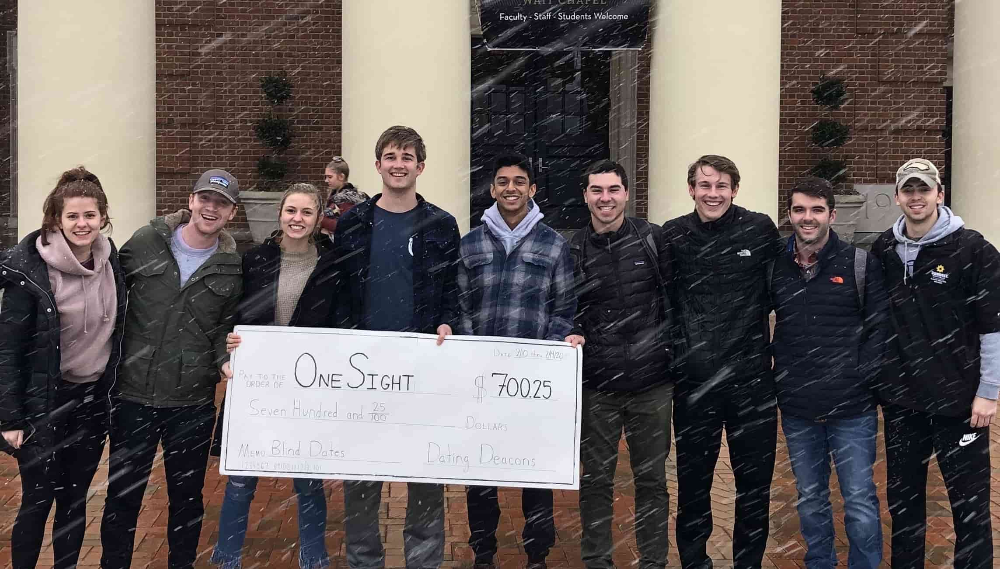

Join our team!
Why become a matchmaker with Dating Deacons?
In short, because we are an inclusive, energetic, easy, and entertaining group to work with, plus an easy addition to your resume.
In long...
at the culmination (the Friday) of the target week, all Dating Deacons Matchmakers will go out for a dinner to celebrate the completion of another successful week of blind dating. This is a time to engage with the other members of the executive committee and reminisce about funny moments throughout the week.
Pairing your friends with someone that you think they would really get to know is an exhilarating feeling. What if something comes of the date? Will your friend finally meet someone they truly click with? You will have the inside information!
The work is in fact, quite easy. Almost all of the matchmaking work is concentrated in a 1 week frame the week before the target week, and is not overwhelming for matchmakers.
Any group on campus will tell you that their club is an easy addition to a resume. Ours might just be the best, and here's why. Imagine being able to tell potential employers that you were a part of the executive board to the largest blind dating club on campus. Questions will ensue about why and what sort of work you did. This is the type of material that will separate your resume from the ones before it.
What are we looking for?
We are looking for matchmakers that will allow us to reach a larger percentage of the student population. We are looking for people that will question our current methods and suggest alternative ways of the pairing, encountering, or matchmaking processes. Most of all, we want matchmakers that will help us promote Dating Deacons.
For the Blind!
*make sure you're signed in with your WFU email account!